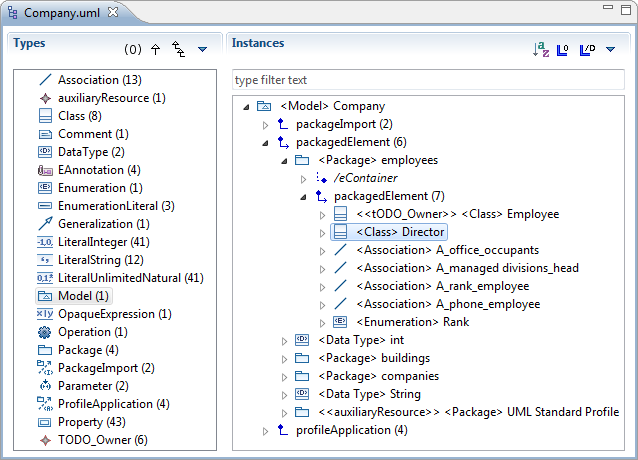
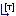
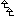
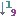
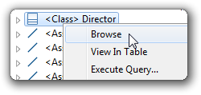
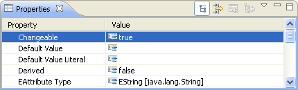
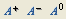

The MoDisco Model Browser is a feature-rich Ecore model browser. You can use it to browse any Ecore model more easily than with the default Ecore editor.

The browser surface is separated in two panes. The left one displays a list of meta-classes, and the right one shows instances of the selected meta-class (that is, model elements).
At the top of each pane, a toolbar allows you to quickly change display options relative to that pane.
You can follow links between model elements by expanding the links tree nodes. Links appear for associations, aggregations and the EMF container. The tree representing the model is infinite.
An icon indicates the link type, and the number of instances under the link is displayed in parentheses.
| icon | meaning |
|---|---|
| bidirectional link | |
|
|
unidirectional link |
| bidirectional aggregation link | |
| unidirectional aggregation link | |
| bidirectional inverse aggregation link | |
| link to the EMF container of the element (eContainer); this link is not defined in the metamodel |
The source of the link is always its parent in the tree, and the targets are its children.
You can use the buttons at the top of the Instances panel to set the following options (click on the down-pointing arrow to see hidden options):
| icon | description |
|---|---|

|
Sort instances by name |
| Show empty links (containing no instances) | |
| Show derived links | |
| Sort links by name | |

|
Sort links by type |
| Display full qualified meta-classes names | |
| Display multiplicities on links | |
| Show ordering | |
| Show opposite links | |

|
Show a link to the container (which is not part of the metamodel definition) |
| Show attributes as tree elements (in addition to the Properties view) | |
| Show empty attributes | |
|  | Show type of links |
The Types panel displays all the meta-classes of the opened model, with the number of instances for each meta-class. When you click on a meta-class, its instances are displayed in the Instances panel. Multi-selection of meta-classes is also supported.
You can use the buttons at the top of the Types panel to set the following options (click on the down-pointing arrow to see hidden options):
| icon | description |
|---|---|
| Show empty meta-classes | |
| Display instances of subclasses (for example, when an abstract meta-class is selected, instances of its derived classes are displayed) | |
|  | Show derivation tree |
|
|
Sort by name |
|  | Sort by instance count |
| Show full qualified names | |
| Group meta-classes by package |
Right-click on a model element and select "Browse" to select the meta-class of this element in the Types panel and display this model element amongst its siblings of the same type. You can also press Enter while an element is selected to trigger this action.

When you navigate from one meta-class to another, or when you browse an instance, you can then go back and forth in navigation history by using the left and right arrows in the toolbar (or the Alt+Left, Alt+Right shortcuts).
Type some text in the search bar and type Enter to filter the currently displayed instances by name. Press Escape to restore the view. Only instances of the currently selected meta-class are filtered.
Attributes of the selected element are displayed in the Properties view. To show this view, double-click on a model element or right-click and select Show Properties View.

You can also display attributes directly in the model tree by activating the "Show Attributes" option in the right toolbar.
The font size can easily be changed by the click of a button in the main toolbar.

The first button makes the font larger, the second one smaller, and the third one restores the default font size. The base font is configurable in Eclipse preferences.